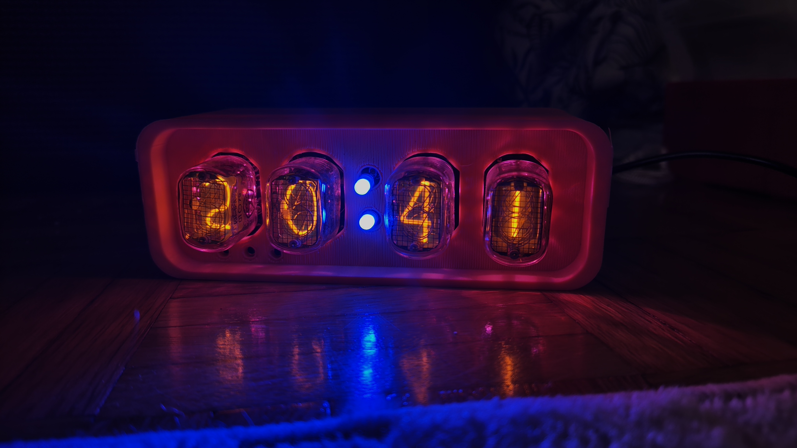
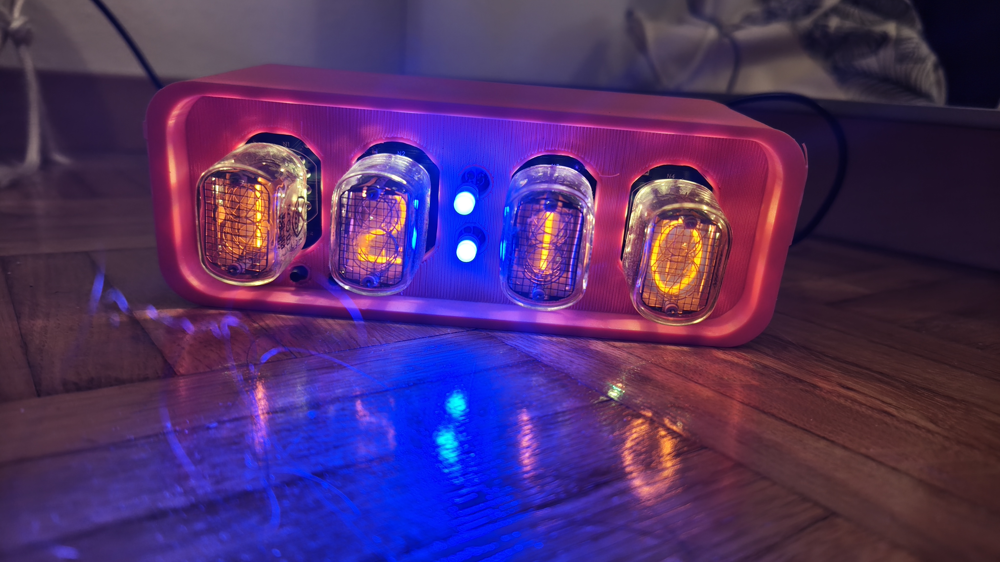
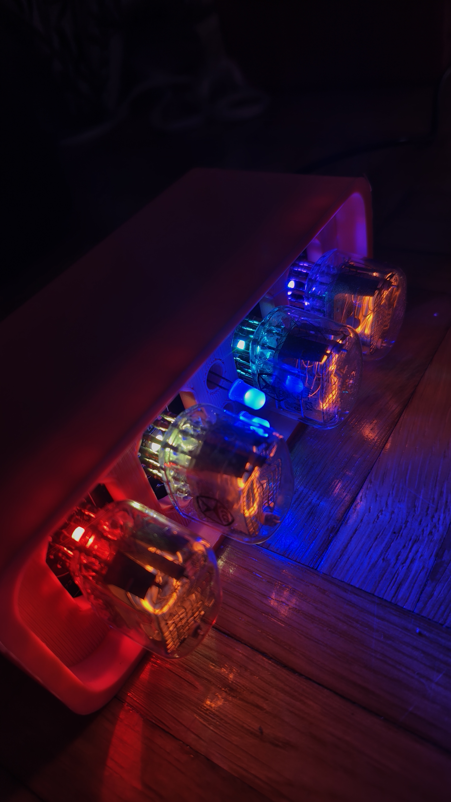
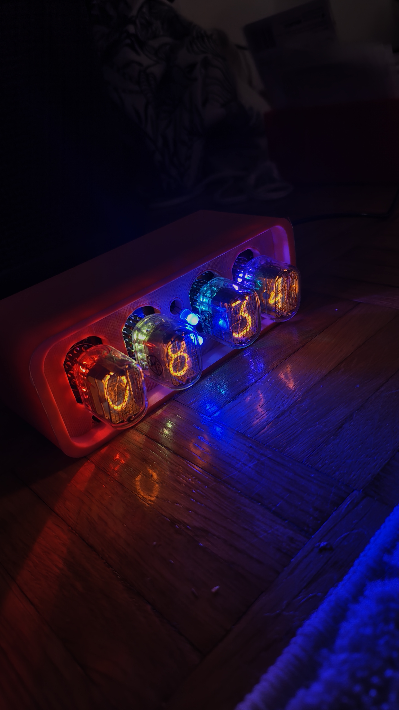
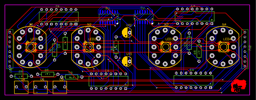
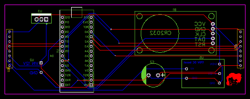
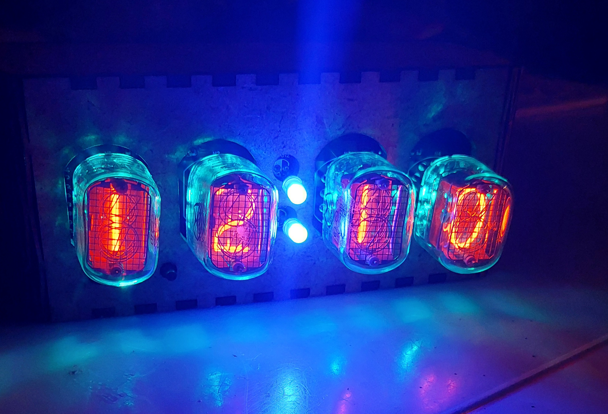
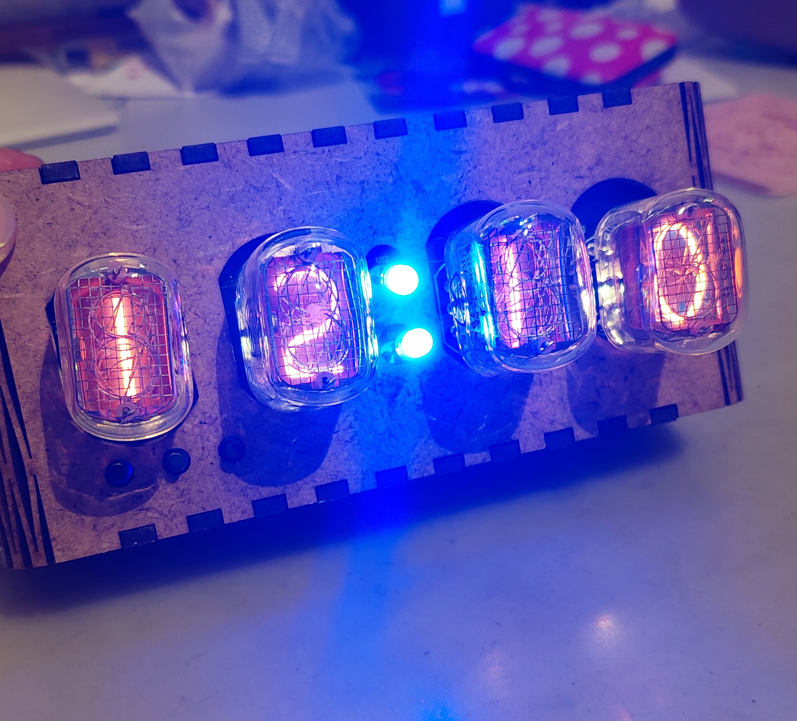

Nixie Tube Clock
A vintage-inspired clock built with IN-12A Nixie tubes.
About the project
I designed this Nixie tube clock using IN-12A Nixie tubes, and I'm really proud of it. It took me a while to get everything just right, and I'm currently working on the case. These tubes, which were first introduced in 1955, run on 170V and have a beautiful, vintage aesthetic.
 Download code
Download code
Details








